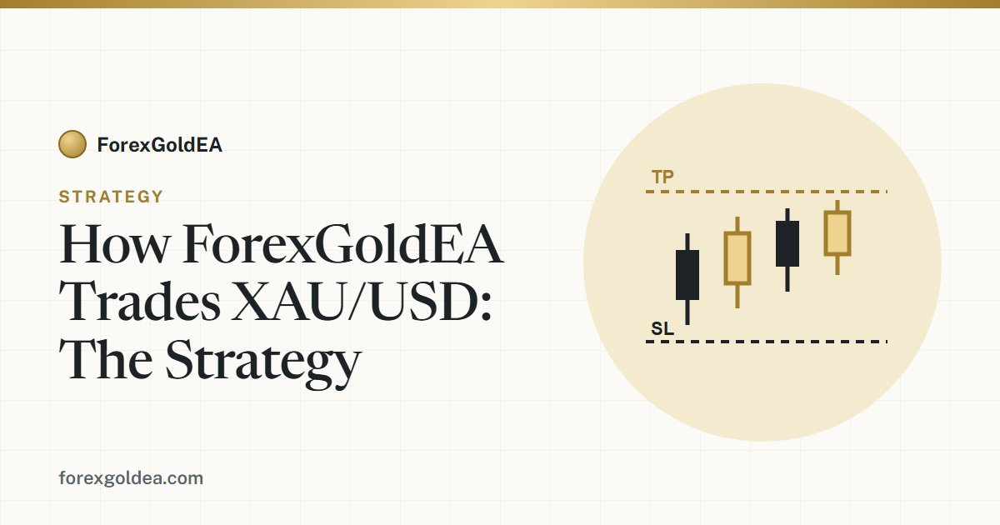

How ForexGoldEA Trades XAU/USD: The Strategy Explained

Gold moves fast, trades nearly around the clock, and punishes hesitation. This guide explains, in plain English, how the ForexGoldEA expert advisor reads the XAU/USD chart, decides when to open a trade, and keeps every loss small and predictable.
What the EA looks for before it trades
ForexGoldEA does not trade on every candle. It waits for a specific alignment of conditions on the gold chart before it commits to a position. In simple terms, it looks for momentum that agrees with the short-term trend, at a moment when the reward on offer is larger than the risk it has to accept to get it.
Because gold is volatile, the EA treats confirmation as more important than speed. A setup that only half-forms is skipped. This is deliberate: fewer, cleaner trades tend to produce steadier equity curves than a robot that fires constantly.
How a trade is opened and protected
When a valid setup appears, the EA opens a single position and immediately attaches two things to it: a fixed stop-loss and a target. Both are set at the moment of entry, not adjusted emotionally afterwards. This matters more than most beginners realise, because a known, fixed stop is what turns an unpredictable market into a defined, repeatable risk.
- Fixed stop-loss: every position has a hard exit level from the start.
- Defined target: the profit objective is set relative to the risk taken.
- One position at a time: the strategy is not built on stacking many trades on top of each other.
Why no martingale? Martingale systems double down after losses to recover them. On gold, a single strong trend can wipe out an account running martingale. ForexGoldEA deliberately avoids this. It accepts small losses as a normal cost and never averages into a losing position.
Risk you actually control
The strategy only works if the person running it stays inside sensible limits, so the EA hands those controls to you. You decide the risk taken on each trade, a daily loss limit that pauses trading after a bad day, and a maximum drawdown ceiling that acts as a circuit breaker. Once set, the EA enforces them automatically, without needing you to watch the screen.
Why it runs best on a VPS
Gold trades roughly 24 hours a day, five days a week. If your computer sleeps or your internet drops, the EA misses setups and, worse, cannot manage open trades. Running it on a VPS (a small always-on server) keeps it connected continuously so the strategy behaves the way it was designed to.
Realistic expectations
No strategy wins every trade, and any honest description of gold trading has to say so clearly. ForexGoldEA is built to keep losers small and let the process play out over many trades, not to guarantee a profit on any single one. Past performance and backtests do not guarantee future results. Trade only with money you can afford to lose.
Want to run this strategy yourself?
Get ForexGoldEA free with our partner broker, or read the full setup guide.
Get the EA Talk to us on Telegram →Frequently asked questions
What pair does ForexGoldEA trade?
It is built specifically for XAU/USD (gold) on MetaTrader 4 and 5, attached to a single gold chart.
Does ForexGoldEA use martingale?
No. Every position opens with a fixed stop-loss and target, and the EA never averages down into losers.
Can I control the risk?
Yes. You set risk per trade, a daily loss limit, and a maximum drawdown ceiling, and the EA respects them automatically.
Risk disclosure: Trading foreign exchange and CFDs on margin, including gold (XAU/USD), carries a high level of risk and may not be suitable for every investor. You can lose some or all of your capital. Performance figures are illustrative and not indicative of future results. ForexGoldEA is a trading tool, not financial advice.